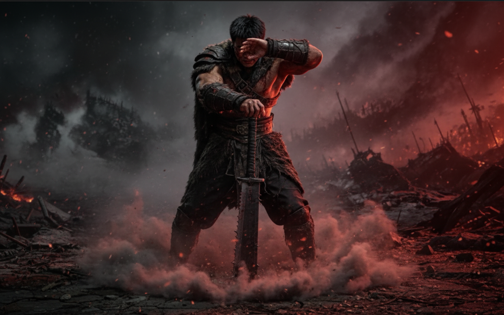
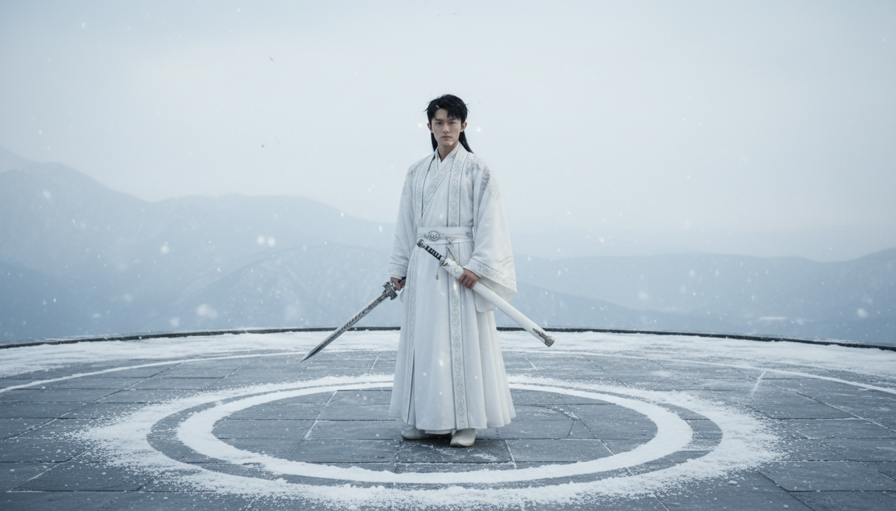

RANK 01 · 南楚枪神
龙归大漠
“枪止，龙现。极致的力量，是动静之间的绝对掌控。”
收势逻辑： 绝技之后的低重心定格。右手持枪斜指，左手沉稳扣住腰间横刀，脚踏实地，气场如山。
物理余韵： 身后排山倒海的风雪，因刚才的一击自然凝聚成巨大的龙首残影，这是纯粹的空气动力学奇迹。
RANK 02 · 西燕狂刀
断岳止戈
“力劈华山之后，唯有大地的呻吟。重刃入土，万夫莫开。”
收势逻辑： 重击落幕。单手拄着深陷地下的【破军】巨刃，身体虽显疲态却充满统治力。脚下裂纹横生。
物理余韵： 碎石与焦土在气浪后缓缓落下，粗粝的狼毫披风随风雪狂舞，暴力美学的终章。


RANK 03 · 孤山剑首
雪封禁区
“剑出如风，剑止如冰。方圆之内，尽是禁区。”
收势逻辑： 站在雪原中心的终极定格。右手剑斜垂，左手紧握白犀角鞘。动作沉稳舒展，双脚深陷积雪。
物理余韵： 周围的积雪被剑气切开一个完美的圆，空气中结晶的冰尘像星屑一样飘散，展现出“剑神”的绝对领域。